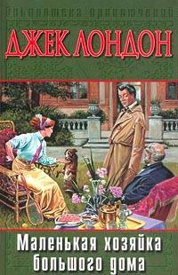

Он проснулся в темноте; проснулся сразу, легко, не сделав ни одного движения, -- просто открыл глаза и увидел, что еще темно. Ему не нужно было, подобно большинству людей, сначала пошарить вокруг себя, прислушаться, ощутить внешний мир, -- он сразу нашел свое "я" в определенных условиях пространства и времени и без усилий продолжал повесть своей жизни, прерванную сном. Он сразу осознал себя Диком Форрестом -- хозяином огромного поместья, который несколько часов назад, уже в полузабытьи, заложил спичкой страницу книги, выключил настольную лампу и уснул.  Где-то совсем рядом сочно плескался и лепетал фонтан. Издалека донесся звук -- такой слабый и смутный, что его могло уловить только очень чуткое ухо; однако Дик Форрест услышал его и улыбнулся: он сразу узнал глухой, хриплый рев Короля Поло, своего лучшего быка из породы шортхорнов...